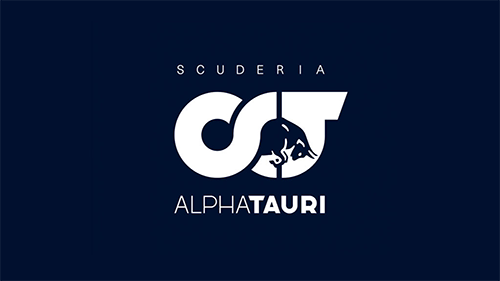

AlphaTauri

Scuderia AlphaTauri, más conocida simplemente como AlphaTauri, es una escudería italiana de Fórmula 1, propiedad de la empresa Red Bull. El constructor fue
renombrado para el año 2020 de Toro Rosso a AlphaTauri para promocionar a la empresa de ropa del mismo nombre.
Como proveedor de motores
En 2005, la empresa Red Bull GmbH creó la Scuderia Toro Rosso tras la compra de Minardi F1 Team a Paul Stoddart. Toro Rosso largó 268 carreras, logrando una única
victoria en el Gran Premio de Italia de 2008 de la mano del futuro campeón de Fórmula 1 Sebastian Vettel. El equipo tuvo que esperar 11 años para volver al podio,
logrados en el Gran Premio de Alemania y Brasil de 2019 con Daniil Kvyat y Pierre Gasly respectivamente.
A mediados de 2019 se anunció que para la temporada 2020, el equipo Toro Rosso fue renombrado como «AlphaTauri» para promocionar a la marca de ropa del mismo nombre.
Para su primer año en la F1, AlphaTauri retuvo a Gasly y a Kvyat, quienes habían sido pilotos de Toro Rosso en 2019. En el Gran Premio de Italia el equipo logró su
primer victoria y primera personal para Gasly, saliendo desde el décimo lugar. Finalmente AlphaTauri se ubicó en la séptima posición en el Campeonato de
Constructores con 107 puntos.
Para 2021, el equipo mantuvo a Gasly en el primer asiento y fichó al debutante japonés Yuki Tsunoda. A lo largo del año sumaron 142 puntos en total, logrando un
podio en Azerbaiyán. AlphaTauri se ubicó sexto en el campeonato.
En 2022, el equipo mantuvo la misma pareja de pilotos. Sumó solo 35 puntos en total, terminando en la penúltima posición del Campeonato de Constructores. El mejor
resultado que consiguió fue una quinta plaza, en Azerbaiyán, por Pierre Gasly.